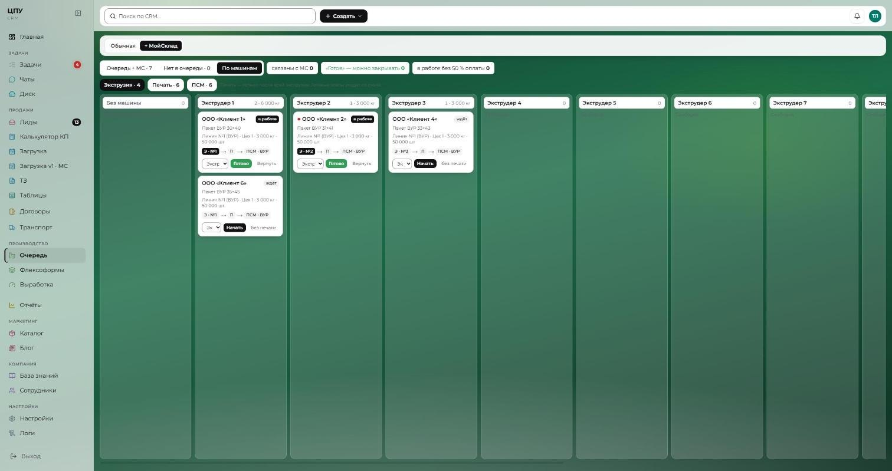
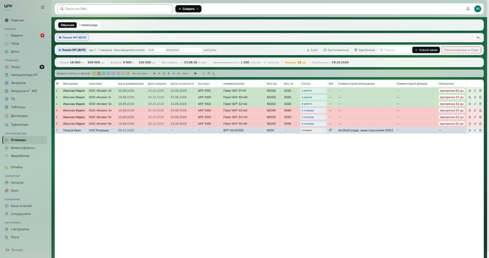
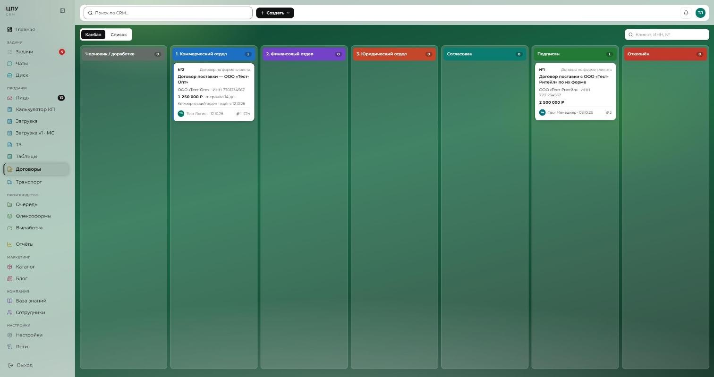

Корпоративная CRM для производства
с нуля · 2026Задача
- Заявки, производство, договоры и логистика жили в Bitrix24, Excel и чатах — не было одной картины, где какой заказ.
- Нужна система под процессы именно этого производства, а не «коробка».
Результат
- ~25 сотрудников работают в одной системе: от лида до отгрузки.
- Очередь производства видна всем в реальном времени, договоры согласуются по маршруту, а не в переписке.
Что сделала
- Продажи: лиды с канбаном и синхронизацией с Bitrix24, фильтры, объединение дублей, обязательные поля по стадиям, аналитика и отчёты, калькулятор КП с выгрузкой в Word/Excel.
- Производство: очередь заказов по 8 линиям в реальном времени, маршрут заказа по 23 станкам (экструзия → печать → ПСМ), интеграция с МойСклад.
- Процессы: согласование договоров, заявки на транспорт, задачи с обсуждением, уведомления и push, роли и права.
- Коммуникации: чат с видеозвонками и демонстрацией экрана, диск с совместным редактированием документов, база знаний, мобильная версия.
- Инфраструктура: собственный сервер, Docker, PostgreSQL, выкатка с автооткатом, резервные копии.



На скриншотах — тестовые данные. Систему покажу вживую на собеседовании.